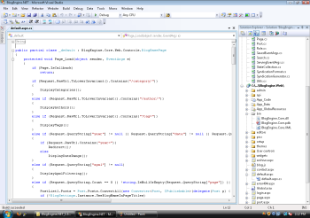
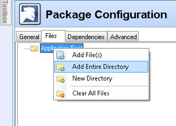
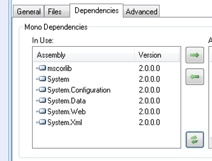
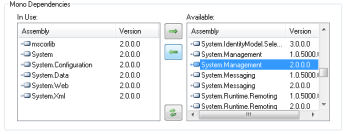
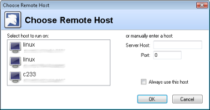
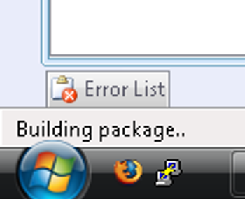

|
|
Create Linux Package for Project |
|
|  |
Step 1:
Open the BlogEngine solution in Visual Studio. |

|
Step 2:
In the Build menu, click "Build Solution." |

|
Step 3:
In the Mono menu, click "Create Linux Package for Project". |

|
Step 4:
Because the BlogEngine solution has 3 projects in it, a prompt to select which project to add the Linux package files to will appear. Select BlogEngine.Web (this is the startup project), and then click the "Ok" button. |

|
Step 5:
Fill out the "General" tab with the following values:
|
|  |
Step 6:
Click on the "Files" tab, then right click on "Application Root" and select "Add Entire Directory". |

|
Step 7:
Browse to the BlogEngine.Web folder and click the "Ok" button. |

|
Step 8:
Click on the "Dependencies" tab, then click on the "Rescan Dependencies" button. |
|  |
Step 9:
Notice that the necessary dependencies have been detected and added to the list. |
|  |
Step 10:
Select the "System.Management 2.0.0.0" assembly and click on the left arrow button to manually add it to the dependency list. |

|
Step 11:
Click on the "Advanced" tab. Everything in this tab should already be filled out correctly. |

|
Step 12:
Save the solution, then click the "Create Package" button. |
|  |
Step 13:
The MonoVS Choose Remote Host dialog will appear. Choose the host to remotely build the Linux package on and click the "Ok" button. |

|
Step 14:
Select the folder to save the Linux package to once it's built. For this example, it's best to just save it to the Desktop. |
|  |
Step 15:
While the Linux package is being built, the Visual Studio status bar will say "Building package.." Depending on the setup, this could take awhile. Once built, the Linux package will be placed in the location chosen. |
{kind=link}
{kind=link}
{kind=link}
{kind=link}
{kind=link}
{kind=link}